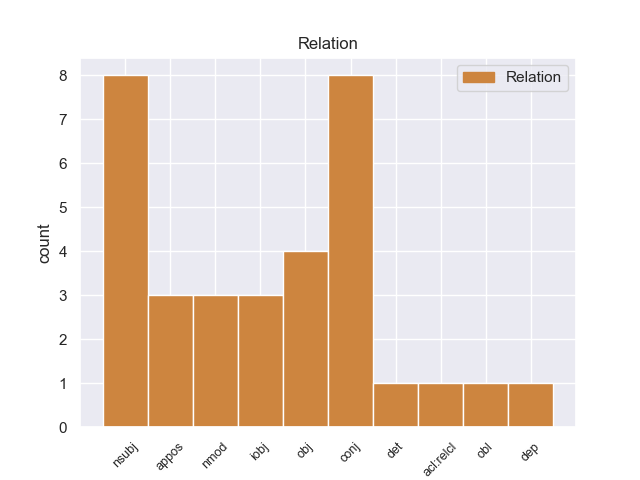
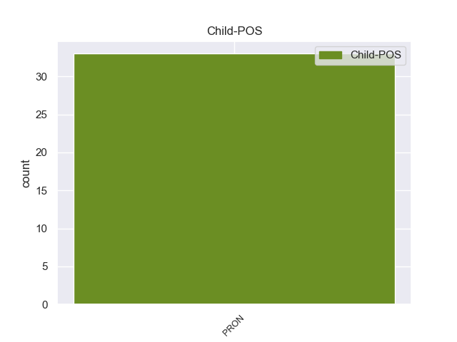

Distribution of features within this leaf



Agreement Rules sorted by frequency.
- When the dependent token is the conjunct(conj) of the head token,
1 A _ _ _ _ 0 _ _ _
2 la _ _ _ _ 0 _ _ _
3 amenaza _ _ _ _ 0 _ _ _
4 de _ _ _ _ 0 _ _ _
5 los _ _ _ _ 0 _ _ _
6 piratas _ _ _ _ 0 _ _ _
7 se _ _ _ _ 0 _ _ _
8 une _ _ _ _ 0 _ _ _
9 la él PRON _ Case=Acc|Gender=Fem|Number=Sing|Person=3|PrepCase=Npr|PronType=Prs 0 _ _ _
10 de _ _ _ _ 0 _ _ _
11 el _ _ _ _ 0 _ _ _
12 propio _ _ _ _ 0 _ _ _
13 Vitelio _ _ _ _ 0 _ _ _
14 y _ _ _ _ 0 _ _ _
15 la él PRON _ Case=Acc|Gender=Fem|Number=Sing|Person=3|PrepCase=Npr|PronType=Prs 9 conj _ _
16 de _ _ _ _ 0 _ _ _
17 un _ _ _ _ 0 _ _ _
18 traidor _ _ _ _ 0 _ _ _
19 que _ _ _ _ 0 _ _ _
20 mantiene _ _ _ _ 0 _ _ _
21 informados _ _ _ _ 0 _ _ _
22 a _ _ _ _ 0 _ _ _
23 los _ _ _ _ 0 _ _ _
24 piratas _ _ _ _ 0 _ _ _
25 de _ _ _ _ 0 _ _ _
26 todos _ _ _ _ 0 _ _ _
27 los _ _ _ _ 0 _ _ _
28 movimientos _ _ _ _ 0 _ _ _
29 de _ _ _ _ 0 _ _ _
30 la _ _ _ _ 0 _ _ _
31 flota _ _ _ _ 0 _ _ _
32 romana _ _ _ _ 0 _ _ _
33 . _ _ _ _ 0 _ _ _
1 Lo él PRON _ Case=Acc|Gender=Masc|Number=Sing|Person=3|PrepCase=Npr|PronType=Prs 11 nsubj _ _
2 que _ _ _ _ 0 _ _ _
3 sabemos _ _ _ _ 0 _ _ _
4 desde _ _ _ _ 0 _ _ _
5 el _ _ _ _ 0 _ _ _
6 punto _ _ _ _ 0 _ _ _
7 de _ _ _ _ 0 _ _ _
8 vista _ _ _ _ 0 _ _ _
9 medioambiental _ _ _ _ 0 _ _ _
10 es _ _ _ _ 0 _ _ _
11 lo él PRON _ Case=Acc|Gender=Masc|Number=Sing|Person=3|PrepCase=Npr|PronType=Prs 0 _ _ _
12 que _ _ _ _ 0 _ _ _
13 ya _ _ _ _ 0 _ _ _
14 he _ _ _ _ 0 _ _ _
15 mencionado _ _ _ _ 0 _ _ _
16 : _ _ _ _ 0 _ _ _
17 que _ _ _ _ 0 _ _ _
18 ahora _ _ _ _ 0 _ _ _
19 existe _ _ _ _ 0 _ _ _
20 un _ _ _ _ 0 _ _ _
21 plan _ _ _ _ 0 _ _ _
22 de _ _ _ _ 0 _ _ _
23 reconstrucción _ _ _ _ 0 _ _ _
24 medioambiental _ _ _ _ 0 _ _ _
25 ; _ _ _ _ 0 _ _ _
1 El _ _ _ _ 0 _ _ _
2 gobierno _ _ _ _ 0 _ _ _
3 belga _ _ _ _ 0 _ _ _
4 ha _ _ _ _ 0 _ _ _
5 adoptado _ _ _ _ 0 _ _ _
6 una _ _ _ _ 0 _ _ _
7 serie _ _ _ _ 0 _ _ _
8 de _ _ _ _ 0 _ _ _
9 medidas _ _ _ _ 0 _ _ _
10 , _ _ _ _ 0 _ _ _
11 pero _ _ _ _ 0 _ _ _
12 quizá _ _ _ _ 0 _ _ _
13 sería _ _ _ _ 0 _ _ _
14 más _ _ _ _ 0 _ _ _
15 útil _ _ _ _ 0 _ _ _
16 que _ _ _ _ 0 _ _ _
17 la _ _ _ _ 0 _ _ _
18 Comisión _ _ _ _ 0 _ _ _
19 elaborara _ _ _ _ 0 _ _ _
20 una _ _ _ _ 0 _ _ _
21 especie _ _ _ _ 0 _ _ _
22 de _ _ _ _ 0 _ _ _
23 lista _ _ _ _ 0 _ _ _
24 de _ _ _ _ 0 _ _ _
25 sociedades _ _ _ _ 0 _ _ _
26 aeroportuarias _ _ _ _ 0 _ _ _
27 buenas _ _ _ _ 0 _ _ _
28 y _ _ _ _ 0 _ _ _
29 malas _ _ _ _ 0 _ _ _
30 en _ _ _ _ 0 _ _ _
31 materia _ _ _ _ 0 _ _ _
32 de _ _ _ _ 0 _ _ _
33 ruido _ _ _ _ 0 _ _ _
34 , _ _ _ _ 0 _ _ _
35 las él PRON _ Case=Acc|Gender=Fem|Number=Plur|Person=3|PrepCase=Npr|PronType=Prs 0 _ _ _
36 que _ _ _ _ 0 _ _ _
37 invierten _ _ _ _ 0 _ _ _
38 en _ _ _ _ 0 _ _ _
39 la _ _ _ _ 0 _ _ _
40 lucha _ _ _ _ 0 _ _ _
41 contra _ _ _ _ 0 _ _ _
42 el _ _ _ _ 0 _ _ _
43 ruido _ _ _ _ 0 _ _ _
44 , _ _ _ _ 0 _ _ _
45 las él PRON _ Case=Acc|Gender=Fem|Number=Plur|Person=3|PrepCase=Npr|PronType=Prs 35 appos _ _
46 que _ _ _ _ 0 _ _ _
47 pueden _ _ _ _ 0 _ _ _
48 presentar _ _ _ _ 0 _ _ _
49 un _ _ _ _ 0 _ _ _
50 buen _ _ _ _ 0 _ _ _
51 resultado _ _ _ _ 0 _ _ _
52 en _ _ _ _ 0 _ _ _
53 la _ _ _ _ 0 _ _ _
54 lucha _ _ _ _ 0 _ _ _
55 contra _ _ _ _ 0 _ _ _
56 el _ _ _ _ 0 _ _ _
57 ruido _ _ _ _ 0 _ _ _
58 y _ _ _ _ 0 _ _ _
59 las _ _ _ _ 0 _ _ _
60 que _ _ _ _ 0 _ _ _
61 no _ _ _ _ 0 _ _ _
62 pueden _ _ _ _ 0 _ _ _
63 , _ _ _ _ 0 _ _ _
64 las _ _ _ _ 0 _ _ _
65 que _ _ _ _ 0 _ _ _
66 no _ _ _ _ 0 _ _ _
67 han _ _ _ _ 0 _ _ _
68 hecho _ _ _ _ 0 _ _ _
69 lo _ _ _ _ 0 _ _ _
70 posible _ _ _ _ 0 _ _ _
71 , _ _ _ _ 0 _ _ _
72 y _ _ _ _ 0 _ _ _
73 tomara _ _ _ _ 0 _ _ _
74 medidas _ _ _ _ 0 _ _ _
75 en _ _ _ _ 0 _ _ _
76 consecuencia _ _ _ _ 0 _ _ _
77 . _ _ _ _ 0 _ _ _
1 En _ _ _ _ 0 _ _ _
2 la _ _ _ _ 0 _ _ _
3 provincia _ _ _ _ 0 _ _ _
4 vecina _ _ _ _ 0 _ _ _
5 vivía _ _ _ _ 0 _ _ _
6 con _ _ _ _ 0 _ _ _
7 tres _ _ _ _ 0 _ _ _
8 amigas _ _ _ _ 0 _ _ _
9 y _ _ _ _ 0 _ _ _
10 se _ _ _ _ 0 _ _ _
11 comunicaba _ _ _ _ 0 _ _ _
12 cada _ _ _ _ 0 _ _ _
13 tanto _ _ _ _ 0 _ _ _
14 con _ _ _ _ 0 _ _ _
15 su _ _ _ _ 0 _ _ _
16 familia _ _ _ _ 0 _ _ _
17 , _ _ _ _ 0 _ _ _
18 pero _ _ _ _ 0 _ _ _
19 ellos él PRON _ Case=Acc,Nom|Gender=Masc|Number=Plur|Person=3|PronType=Prs 0 _ _ _
20 con _ _ _ _ 0 _ _ _
21 ella él PRON _ Case=Acc,Nom|Gender=Fem|Number=Sing|Person=3|PronType=Prs 19 nmod _ _
22 no _ _ _ _ 0 _ _ _
23 , _ _ _ _ 0 _ _ _
24 porque _ _ _ _ 0 _ _ _
25 la _ _ _ _ 0 _ _ _
26 joven _ _ _ _ 0 _ _ _
27 prefirió _ _ _ _ 0 _ _ _
28 no _ _ _ _ 0 _ _ _
29 exponer _ _ _ _ 0 _ _ _
30 a _ _ _ _ 0 _ _ _
31 sus _ _ _ _ 0 _ _ _
32 cercanos _ _ _ _ 0 _ _ _
33 . _ _ _ _ 0 _ _ _
1 Además _ _ _ _ 0 _ _ _
2 , _ _ _ _ 0 _ _ _
3 tan _ _ _ _ 0 _ _ _
4 sólo _ _ _ _ 0 _ _ _
5 con _ _ _ _ 0 _ _ _
6 apuntar _ _ _ _ 0 _ _ _
7 se _ _ _ _ 0 _ _ _
8 formarán _ _ _ _ 0 _ _ _
9 parte _ _ _ _ 0 _ _ _
10 , _ _ _ _ 0 _ _ _
11 sin _ _ _ _ 0 _ _ _
12 que _ _ _ _ 0 _ _ _
13 les _ _ _ _ 0 _ _ _
14 suponga _ _ _ _ 0 _ _ _
15 coste _ _ _ _ 0 _ _ _
16 alguno _ _ _ _ 0 _ _ _
17 , _ _ _ _ 0 _ _ _
18 de _ _ _ _ 0 _ _ _
19 un _ _ _ _ 0 _ _ _
20 proyecto _ _ _ _ 0 _ _ _
21 solidario _ _ _ _ 0 _ _ _
22 ecológico _ _ _ _ 0 _ _ _
23 con _ _ _ _ 0 _ _ _
24 la _ _ _ _ 0 _ _ _
25 asociación _ _ _ _ 0 _ _ _
26 tahitiana _ _ _ _ 0 _ _ _
27 sin _ _ _ _ 0 _ _ _
28 ánimo _ _ _ _ 0 _ _ _
29 de _ _ _ _ 0 _ _ _
30 lucro _ _ _ _ 0 _ _ _
31 Te tú PRON _ Case=Acc,Dat|Number=Sing|Person=2|PrepCase=Npr|PronType=Prs 0 _ _ _
32 Mana _ _ _ _ 0 _ _ _
33 O _ _ _ _ 0 _ _ _
34 Te tú PRON _ Case=Acc,Dat|Number=Sing|Person=2|PrepCase=Npr|PronType=Prs 31 dep _ _
35 Moana _ _ _ _ 0 _ _ _
36 , _ _ _ _ 0 _ _ _
37 dedicada _ _ _ _ 0 _ _ _
38 a _ _ _ _ 0 _ _ _
39 la _ _ _ _ 0 _ _ _
40 protección _ _ _ _ 0 _ _ _
41 y _ _ _ _ 0 _ _ _
42 salvamento _ _ _ _ 0 _ _ _
43 de _ _ _ _ 0 _ _ _
44 las _ _ _ _ 0 _ _ _
45 tortugas _ _ _ _ 0 _ _ _
46 marinas _ _ _ _ 0 _ _ _
47 , _ _ _ _ 0 _ _ _
48 en _ _ _ _ 0 _ _ _
49 el _ _ _ _ 0 _ _ _
50 que _ _ _ _ 0 _ _ _
51 la _ _ _ _ 0 _ _ _
52 oficina _ _ _ _ 0 _ _ _
53 de _ _ _ _ 0 _ _ _
54 turismo _ _ _ _ 0 _ _ _
55 destinará _ _ _ _ 0 _ _ _
56 fondos _ _ _ _ 0 _ _ _
57 para _ _ _ _ 0 _ _ _
58 los _ _ _ _ 0 _ _ _
59 cuidados _ _ _ _ 0 _ _ _
60 veterinarios _ _ _ _ 0 _ _ _
61 y _ _ _ _ 0 _ _ _
62 alimentación _ _ _ _ 0 _ _ _
63 en _ _ _ _ 0 _ _ _
64 la _ _ _ _ 0 _ _ _
65 Clínica _ _ _ _ 0 _ _ _
66 de _ _ _ _ 0 _ _ _
67 la _ _ _ _ 0 _ _ _
68 asociación _ _ _ _ 0 _ _ _
69 . _ _ _ _ 0 _ _ _
Disagree Examples:
1 Son _ _ _ _ 0 _ _ _
2 ellos él PRON _ Case=Acc,Nom|Gender=Masc|Number=Plur|Person=3|PronType=Prs 3 nsubj _ _
3 los él PRON _ Case=Acc|Gender=Masc|Number=Plur|Person=3|PrepCase=Npr|PronType=Prs 0 _ _ _
4 que _ _ _ _ 0 _ _ _
5 provocan _ _ _ _ 0 _ _ _
6 la _ _ _ _ 0 _ _ _
7 producción _ _ _ _ 0 _ _ _
8 y _ _ _ _ 0 _ _ _
9 los _ _ _ _ 0 _ _ _
10 daños _ _ _ _ 0 _ _ _
11 a _ _ _ _ 0 _ _ _
12 los _ _ _ _ 0 _ _ _
13 menores _ _ _ _ 0 _ _ _
14 . _ _ _ _ 0 _ _ _
1 Pregunta _ _ _ _ 0 _ _ _
2 nº _ _ _ _ 0 _ _ _
3 37 _ _ _ _ 0 _ _ _
4 formulada _ _ _ _ 0 _ _ _
5 por _ _ _ _ 0 _ _ _
6 ( _ _ _ _ 0 _ _ _
7 H-0409/ _ _ _ _ 0 _ _ _
8 00 _ _ _ _ 0 _ _ _
9 ) _ _ _ _ 0 _ _ _
10 : _ _ _ _ 0 _ _ _
11 Asunto _ _ _ _ 0 _ _ _
12 : _ _ _ _ 0 _ _ _
13 Mayor _ _ _ _ 0 _ _ _
14 grado _ _ _ _ 0 _ _ _
15 de _ _ _ _ 0 _ _ _
16 integración _ _ _ _ 0 _ _ _
17 como _ _ _ _ 0 _ _ _
18 consecuencia _ _ _ _ 0 _ _ _
19 de _ _ _ _ 0 _ _ _
20 la _ _ _ _ 0 _ _ _
21 UEM _ _ _ _ 0 _ _ _
22 ¿ _ _ _ _ 0 _ _ _
23 Hasta _ _ _ _ 0 _ _ _
24 qué _ _ _ _ 0 _ _ _
25 punto _ _ _ _ 0 _ _ _
26 , _ _ _ _ 0 _ _ _
27 a _ _ _ _ 0 _ _ _
28 juicio _ _ _ _ 0 _ _ _
29 de _ _ _ _ 0 _ _ _
30 la _ _ _ _ 0 _ _ _
31 Comisión _ _ _ _ 0 _ _ _
32 , _ _ _ _ 0 _ _ _
33 las _ _ _ _ 0 _ _ _
34 exigencias _ _ _ _ 0 _ _ _
35 que _ _ _ _ 0 _ _ _
36 la _ _ _ _ 0 _ _ _
37 UEM _ _ _ _ 0 _ _ _
38 impone _ _ _ _ 0 _ _ _
39 a _ _ _ _ 0 _ _ _
40 la _ _ _ _ 0 _ _ _
41 política _ _ _ _ 0 _ _ _
42 económica _ _ _ _ 0 _ _ _
43 ( _ _ _ _ 0 _ _ _
44 entre _ _ _ _ 0 _ _ _
45 ellas él PRON _ Case=Acc,Nom|Gender=Fem|Number=Plur|Person=3|PronType=Prs 47 nmod _ SpaceAfter=No
46 , _ _ _ _ 0 _ _ _
47 la él PRON _ Case=Acc|Gender=Fem|Number=Sing|Person=3|PrepCase=Npr|PronType=Prs 0 _ _ _
48 de _ _ _ _ 0 _ _ _
49 unos _ _ _ _ 0 _ _ _
50 tipos _ _ _ _ 0 _ _ _
51 de _ _ _ _ 0 _ _ _
52 cambio _ _ _ _ 0 _ _ _
53 fijados _ _ _ _ 0 _ _ _
54 con _ _ _ _ 0 _ _ _
55 carácter _ _ _ _ 0 _ _ _
56 definitivo _ _ _ _ 0 _ _ _
57 ) _ _ _ _ 0 _ _ _
58 crean _ _ _ _ 0 _ _ _
59 la _ _ _ _ 0 _ _ _
60 necesidad _ _ _ _ 0 _ _ _
61 de _ _ _ _ 0 _ _ _
62 un _ _ _ _ 0 _ _ _
63 mayor _ _ _ _ 0 _ _ _
64 grado _ _ _ _ 0 _ _ _
65 de _ _ _ _ 0 _ _ _
66 integración _ _ _ _ 0 _ _ _
67 en _ _ _ _ 0 _ _ _
68 el _ _ _ _ 0 _ _ _
69 plano _ _ _ _ 0 _ _ _
70 económico _ _ _ _ 0 _ _ _
71 , _ _ _ _ 0 _ _ _
72 traducido _ _ _ _ 0 _ _ _
73 en _ _ _ _ 0 _ _ _
74 forma _ _ _ _ 0 _ _ _
75 de _ _ _ _ 0 _ _ _
76 presupuesto _ _ _ _ 0 _ _ _
77 común _ _ _ _ 0 _ _ _
78 de _ _ _ _ 0 _ _ _
79 mayores _ _ _ _ 0 _ _ _
80 dimensiones _ _ _ _ 0 _ _ _
81 ( _ _ _ _ 0 _ _ _
82 política _ _ _ _ 0 _ _ _
83 presupuestaria _ _ _ _ 0 _ _ _
84 común _ _ _ _ 0 _ _ _
85 ) _ _ _ _ 0 _ _ _
86 , _ _ _ _ 0 _ _ _
87 transferencias _ _ _ _ 0 _ _ _
88 entre _ _ _ _ 0 _ _ _
89 Estados _ _ _ _ 0 _ _ _
90 miembros _ _ _ _ 0 _ _ _
91 en _ _ _ _ 0 _ _ _
92 función _ _ _ _ 0 _ _ _
93 de _ _ _ _ 0 _ _ _
94 la _ _ _ _ 0 _ _ _
95 coyuntura _ _ _ _ 0 _ _ _
96 , _ _ _ _ 0 _ _ _
97 mayor _ _ _ _ 0 _ _ _
98 movilidad _ _ _ _ 0 _ _ _
99 de _ _ _ _ 0 _ _ _
100 la _ _ _ _ 0 _ _ _
101 mano _ _ _ _ 0 _ _ _
102 de _ _ _ _ 0 _ _ _
103 obra _ _ _ _ 0 _ _ _
104 entre _ _ _ _ 0 _ _ _
105 los _ _ _ _ 0 _ _ _
106 Estados _ _ _ _ 0 _ _ _
107 miembros _ _ _ _ 0 _ _ _
108 y _ _ _ _ 0 _ _ _
109 un _ _ _ _ 0 _ _ _
110 mercado _ _ _ _ 0 _ _ _
111 de _ _ _ _ 0 _ _ _
112 trabajo _ _ _ _ 0 _ _ _
113 más _ _ _ _ 0 _ _ _
114 flexible _ _ _ _ 0 _ _ _
115 ? _ _ _ _ 0 _ _ _
1 Admitám _ _ _ _ 0 _ _ _
2 os tú PRON _ Case=Acc,Dat|Number=Plur|Person=2|PrepCase=Npr|PronType=Prs 3 iobj _ _
3 lo él PRON _ Case=Acc|Gender=Masc|Number=Sing|Person=3|PrepCase=Npr|PronType=Prs 0 _ _ _
4 , _ _ _ _ 0 _ _ _
5 señores _ _ _ _ 0 _ _ _
6 colegas _ _ _ _ 0 _ _ _
7 : _ _ _ _ 0 _ _ _
8 tenemos _ _ _ _ 0 _ _ _
9 dentro _ _ _ _ 0 _ _ _
10 de _ _ _ _ 0 _ _ _
11 la _ _ _ _ 0 _ _ _
12 Unión _ _ _ _ 0 _ _ _
13 Europea _ _ _ _ 0 _ _ _
14 cantidad _ _ _ _ 0 _ _ _
15 de _ _ _ _ 0 _ _ _
16 espabilados _ _ _ _ 0 _ _ _
17 amantes _ _ _ _ 0 _ _ _
18 de _ _ _ _ 0 _ _ _
19 el _ _ _ _ 0 _ _ _
20 dinero _ _ _ _ 0 _ _ _
21 , _ _ _ _ 0 _ _ _
22 y _ _ _ _ 0 _ _ _
23 la _ _ _ _ 0 _ _ _
24 delincuencia _ _ _ _ 0 _ _ _
25 organizada _ _ _ _ 0 _ _ _
26 hace _ _ _ _ 0 _ _ _
27 mucho _ _ _ _ 0 _ _ _
28 que _ _ _ _ 0 _ _ _
29 no _ _ _ _ 0 _ _ _
30 se _ _ _ _ 0 _ _ _
31 limita _ _ _ _ 0 _ _ _
32 a _ _ _ _ 0 _ _ _
33 el _ _ _ _ 0 _ _ _
34 tráfico _ _ _ _ 0 _ _ _
35 de _ _ _ _ 0 _ _ _
36 drogas _ _ _ _ 0 _ _ _
37 , _ _ _ _ 0 _ _ _
38 de _ _ _ _ 0 _ _ _
39 armas _ _ _ _ 0 _ _ _
40 , _ _ _ _ 0 _ _ _
41 de _ _ _ _ 0 _ _ _
42 personas _ _ _ _ 0 _ _ _
43 , _ _ _ _ 0 _ _ _
44 a _ _ _ _ 0 _ _ _
45 el _ _ _ _ 0 _ _ _
46 fraude _ _ _ _ 0 _ _ _
47 de _ _ _ _ 0 _ _ _
48 la _ _ _ _ 0 _ _ _
49 carne _ _ _ _ 0 _ _ _
50 , _ _ _ _ 0 _ _ _
51 contrabando _ _ _ _ 0 _ _ _
52 de _ _ _ _ 0 _ _ _
53 alcohol _ _ _ _ 0 _ _ _
54 y _ _ _ _ 0 _ _ _
55 de _ _ _ _ 0 _ _ _
56 tabaco _ _ _ _ 0 _ _ _
57 , _ _ _ _ 0 _ _ _
58 circuitos _ _ _ _ 0 _ _ _
59 falsos _ _ _ _ 0 _ _ _
60 de _ _ _ _ 0 _ _ _
61 el _ _ _ _ 0 _ _ _
62 IVA _ _ _ _ 0 _ _ _
63 y _ _ _ _ 0 _ _ _
64 fraude _ _ _ _ 0 _ _ _
65 de _ _ _ _ 0 _ _ _
66 aceites _ _ _ _ 0 _ _ _
67 , _ _ _ _ 0 _ _ _
68 no _ _ _ _ 0 _ _ _
69 . _ _ _ _ 0 _ _ _
1 Por _ _ _ _ 0 _ _ _
2 tanto _ _ _ _ 0 _ _ _
3 , _ _ _ _ 0 _ _ _
4 ella él PRON _ Case=Acc,Nom|Gender=Fem|Number=Sing|Person=3|PronType=Prs 6 nsubj _ _
5 es _ _ _ _ 0 _ _ _
6 la él PRON _ Case=Acc|Gender=Fem|Number=Sing|Person=3|PrepCase=Npr|PronType=Prs 0 _ _ _
7 que _ _ _ _ 0 _ _ _
8 debe _ _ _ _ 0 _ _ _
9 verificar _ _ _ _ 0 _ _ _
10 la _ _ _ _ 0 _ _ _
11 conformidad _ _ _ _ 0 _ _ _
12 de _ _ _ _ 0 _ _ _
13 ciertos _ _ _ _ 0 _ _ _
14 proyectos _ _ _ _ 0 _ _ _
15 de _ _ _ _ 0 _ _ _
16 desarrollo _ _ _ _ 0 _ _ _
17 con _ _ _ _ 0 _ _ _
18 las _ _ _ _ 0 _ _ _
19 disposiciones _ _ _ _ 0 _ _ _
20 aplicables _ _ _ _ 0 _ _ _
21 en _ _ _ _ 0 _ _ _
22 materia _ _ _ _ 0 _ _ _
23 de _ _ _ _ 0 _ _ _
24 medio _ _ _ _ 0 _ _ _
25 ambiente _ _ _ _ 0 _ _ _
26 . _ _ _ _ 0 _ _ _
1 En _ _ _ _ 0 _ _ _
2 particular _ _ _ _ 0 _ _ _
3 , _ _ _ _ 0 _ _ _
4 hay _ _ _ _ 0 _ _ _
5 dos _ _ _ _ 0 _ _ _
6 cuestiones _ _ _ _ 0 _ _ _
7 esenciales _ _ _ _ 0 _ _ _
8 : _ _ _ _ 0 _ _ _
9 en _ _ _ _ 0 _ _ _
10 primer _ _ _ _ 0 _ _ _
11 lugar _ _ _ _ 0 _ _ _
12 , _ _ _ _ 0 _ _ _
13 el _ _ _ _ 0 _ _ _
14 aumento _ _ _ _ 0 _ _ _
15 de _ _ _ _ 0 _ _ _
16 los _ _ _ _ 0 _ _ _
17 refuerzos _ _ _ _ 0 _ _ _
18 policiales _ _ _ _ 0 _ _ _
19 , _ _ _ _ 0 _ _ _
20 que _ _ _ _ 0 _ _ _
21 era _ _ _ _ 0 _ _ _
22 un _ _ _ _ 0 _ _ _
23 elemento _ _ _ _ 0 _ _ _
24 importante _ _ _ _ 0 _ _ _
25 para _ _ _ _ 0 _ _ _
26 la _ _ _ _ 0 _ _ _
27 garantía _ _ _ _ 0 _ _ _
28 de _ _ _ _ 0 _ _ _
29 las _ _ _ _ 0 _ _ _
30 poblaciones _ _ _ _ 0 _ _ _
31 civiles _ _ _ _ 0 _ _ _
32 y _ _ _ _ 0 _ _ _
33 , _ _ _ _ 0 _ _ _
34 en _ _ _ _ 0 _ _ _
35 particular _ _ _ _ 0 _ _ _
36 , _ _ _ _ 0 _ _ _
37 para _ _ _ _ 0 _ _ _
38 la _ _ _ _ 0 _ _ _
39 protección _ _ _ _ 0 _ _ _
40 de _ _ _ _ 0 _ _ _
41 determinadas _ _ _ _ 0 _ _ _
42 poblaciones _ _ _ _ 0 _ _ _
43 civiles _ _ _ _ 0 _ _ _
44 , _ _ _ _ 0 _ _ _
45 y _ _ _ _ 0 _ _ _
46 el _ _ _ _ 0 _ _ _
47 aumento _ _ _ _ 0 _ _ _
48 de _ _ _ _ 0 _ _ _
49 asignaciones _ _ _ _ 0 _ _ _
50 que _ _ _ _ 0 _ _ _
51 permitiera _ _ _ _ 0 _ _ _
52 , _ _ _ _ 0 _ _ _
53 en _ _ _ _ 0 _ _ _
54 particular _ _ _ _ 0 _ _ _
55 , _ _ _ _ 0 _ _ _
56 el _ _ _ _ 0 _ _ _
57 mantenimiento _ _ _ _ 0 _ _ _
58 de _ _ _ _ 0 _ _ _
59 algunos _ _ _ _ 0 _ _ _
60 funcionarios _ _ _ _ 0 _ _ _
61 con _ _ _ _ 0 _ _ _
62 funciones _ _ _ _ 0 _ _ _
63 importantes _ _ _ _ 0 _ _ _
64 en _ _ _ _ 0 _ _ _
65 el _ _ _ _ 0 _ _ _
66 proceso _ _ _ _ 0 _ _ _
67 , _ _ _ _ 0 _ _ _
68 digám _ _ _ _ 0 _ _ _
69 os tú PRON _ Case=Acc,Dat|Number=Plur|Person=2|PrepCase=Npr|PronType=Prs 70 obj _ _
70 lo él PRON _ Case=Acc|Gender=Masc|Number=Sing|Person=3|PrepCase=Npr|PronType=Prs 0 _ _ _
71 así _ _ _ _ 0 _ _ _
72 , _ _ _ _ 0 _ _ _
73 administrativo _ _ _ _ 0 _ _ _
74 y _ _ _ _ 0 _ _ _
75 funcional _ _ _ _ 0 _ _ _
76 dentro _ _ _ _ 0 _ _ _
77 de _ _ _ _ 0 _ _ _
78 Kosovo _ _ _ _ 0 _ _ _
79 . _ _ _ _ 0 _ _ _